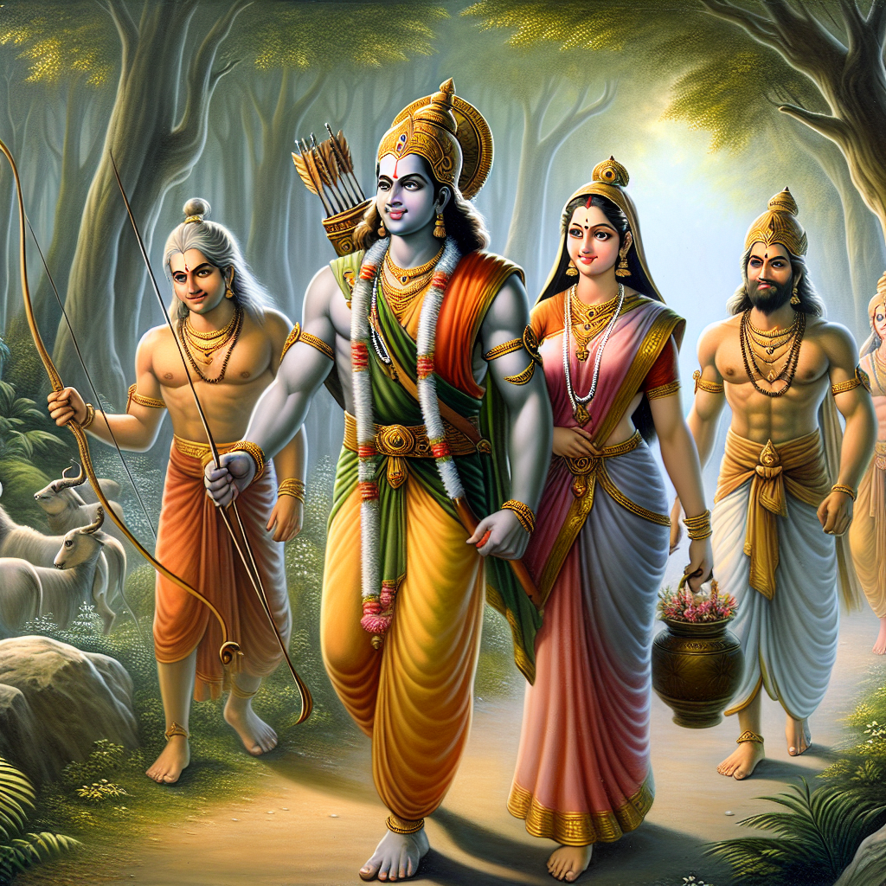
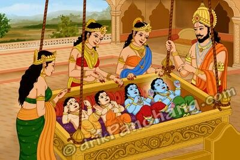
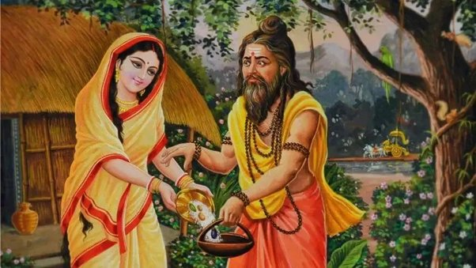
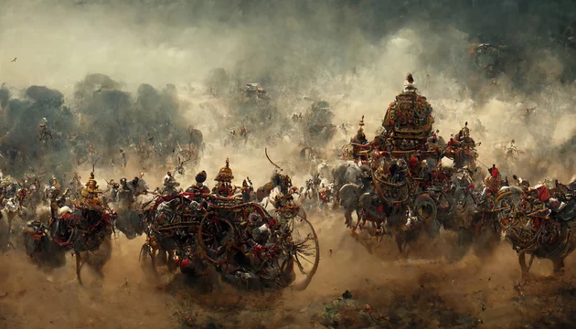
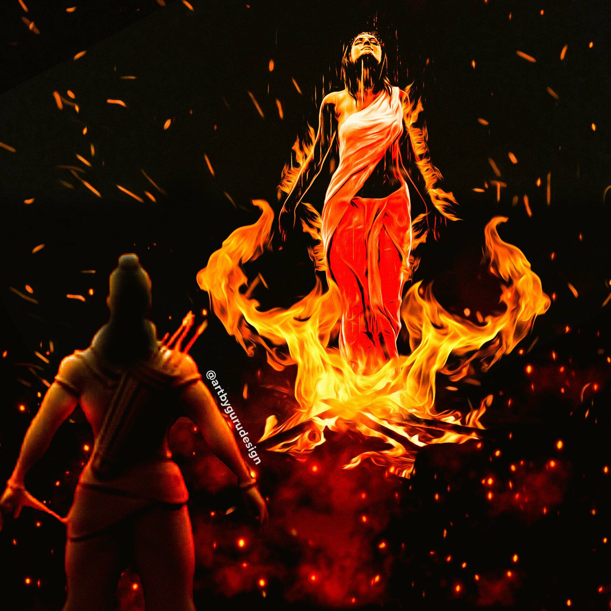
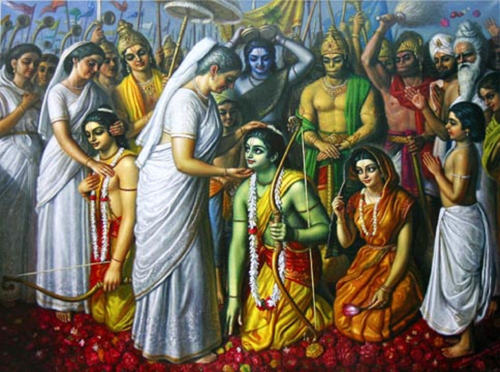

THE RAMAYANA
CHAPTER 1-INTRODUCTION
The Ramayana, an ancient Indian epic attributed to the sage Valmiki, stands as a monumental piece in the tapestry of world literature, weaving together the cultural, moral, and spiritual fabric of India and beyond. At its heart, the Ramayana recounts the story of Rama, the prince of Ayodhya, focusing on his righteous path, unwavering duty, and the trials he faces due to the exile imposed upon him by his father's decree. Alongside Rama,

the epic brings to life a myriad of characters, each embodying various aspects of human virtues and vices: Sita, his devoted wife whose abduction by the demon king Ravana sets the stage for the epic's climactic battle; Lakshmana, his loyal brother who represents the epitome of brotherly love and sacrifice; and Hanuman, a devotee of Rama, whose unparalleled devotion and strength play a crucial role in the quest to rescue Sita. The narrative, divided into seven books or Kandas, not only explores themes of dharma (righteousness), the complexities of ethical and moral dilemmas faced by individuals, but also delves into the ideal qualities of relationships, be it between husband and wife, brother and brother, or deity and devotee.
Beyond its narrative richness, the Ramayana is a cornerstone of cultural and religious discourse, serving as a moral compass for millions. Its teachings on the importance of righteousness, the value of perseverance in the face of adversity, and the power of true devotion resonate across generations, transcending geographical, linguistic, and cultural barriers. This epic has been retold and reinterpreted in countless languages and forms, from classical performances and folk tales to modern cinematic renditions, each adaptation adding layers to its profound legacy. The Ramayana's impact is not confined to the realm of literature alone; it influences art, music, dance, and ritual, infusing everyday life with its timeless wisdom and guiding principles. In essence, the Ramayana is more than just a story; it is a living, breathing cultural and spiritual guide that continues to inspire and enlighten humanity, fostering a sense of unity and moral integrity across the world.
The Ramayana, one of the great epics of ancient India, attributed to the sage Valmiki, is a profound narrative of duty, love, bravery, and dharma. It chronicles the life of Rama, the prince of Ayodhya, his loyal wife Sita, his devoted brother Lakshmana, and a host of other characters, including the noble monkey god Hanuman and the formidable demon king Ravana.
CHAPTER 2-BIRTH AND EXILE OF RAMA
The birth and subsequent exile of Lord Rama, the seventh avatar of Vishnu according to Hindu tradition, unfold as a poignant narrative that is central to the epic Ramayana, deeply resonating with themes of righteousness, sacrifice, and the intricate play of fate. Rama's birth,
in the kingdom of Ayodhya as the eldest son of King Dasharatha and Queen Kausalya, was the result of divine intervention, answering the king's fervent prayers for heirs through a sacred fire sacrifice known as the Putrakameshti Yajna. Rama, along with his brothers Lakshmana, Bharata, and Shatrughna, was born under auspicious stars, heralding the arrival of divine beings destined to shape the course of dharma on Earth. Rama's upbringing, marked by his adherence to dharma and proficiency in martial and scholarly pursuits, set the stage for his destined role as a paragon of virtue and heroism. However, the joyous celebrations of his impending coronation as the crown prince were abruptly dashed when Queen Kaikeyi, one of Dasharatha's wives, invoked two boons granted to her by the king for saving his life in battle years before. Manipulated by her cunning maid Manthara, Kaikeyi demanded that Rama be exiled to the forest for fourteen years and her son Bharata be installed as the heir apparent. Dasharatha, bound by the inviolable sanctity of his word yet heartbroken at the prospect, acceded to her demands. Rama, exemplifying the ideal of filial obedience and respect for his father's word, accepted the decree of exile with equanimity, turning a moment of profound personal loss into an embodiment of dharma and self-sacrifice. Accompanied by his devoted wife Sita and loyal brother Lakshmana, Rama ventured into the wilderness, leaving behind the comforts of royalty for the uncertainties of forest life. This period of exile, marked by trials, tribulations, and the forging of pivotal alliances, would eventually lead to the epic confrontation with Ravana, the demon king of Lanka, setting the stage for a battle between good and evil. The narrative of Rama's birth and exile thus serves not only as a testament to his character and resolve but also as a foundational ethos for the epic, intertwining the human with the divine in the relentless pursuit of righteousness amidst the vagaries of fate and moral dilemmas.

CHAPTER 3-ABDUCTION OF SITA
The abduction of Sita by Ravana, the demon king of Lanka, is a pivotal event in the Ramayana that catalyzes the epic's ensuing saga of rescue, warfare, and the triumph of good over evil, embodying profound cultural and spiritual motifs. Sita, the embodiment of virtue and unwavering fidelity, had accompanied her husband Rama and his brother Lakshmana into exile in the dense and foreboding forests of Dandaka. It was here, amidst the tranquility of their hermitage life, that the malevolent gaze of Ravana fell upon Sita.

Enchanted by tales of her unparalleled beauty and virtue, and spurred by the insult inflicted upon his sister Surpanakha by Rama and Lakshmana, Ravana conceived a nefarious plot to abduct Sita, thus setting the stage for a deeper conflict that transcended the personal and ventured into the cosmic battle between righteousness (dharma) and adharma (unrighteousness).
Employing deceit and magical prowess, Ravana approached the hermitage in the guise of a mendicant, drawing Rama and Lakshmana away from Sita through the machinations of a golden deer, Maricha, transformed and sent to enchant Sita with its beauty. Seized by a desire for the captivating deer, Sita requested Rama to capture it for her. Reluctantly, Rama pursued the deer into the forest, leaving Sita under Lakshmana's protection. However, the illusory deer's magical cry for help, mimicking Rama's voice, tricked Sita into insisting that Lakshmana rush to his brother's aid. Bound by the duty to protect and obey, Lakshmana left, marking a protective circle around Sita with the assurance that no harm would come to her as long as she remained within it. It was then that Ravana, seizing the opportunity, approached disguised as a mendicant. When Sita, adhering to the duties of hospitality, stepped beyond the circle to offer alms, Ravana revealed his true form and abducted her, whisking her away to Lanka in his aerial chariot, Pushpaka Vimana, despite the desperate resistance of Jatayu, the vulture king and friend to Rama.
The abduction of Sita not only signifies the personal anguish and the profound challenge it posed to Rama and Sita but also represents the disruption of the cosmic order, inviting a confrontation that transcends mere personal vendetta, embodying the eternal struggle between the forces of good and darkness. Sita's abduction by Ravana is thus not merely an act of personal vengeance but a pivotal event that sets into motion the larger narrative of the Ramayana, culminating in the mobilization of forces, the forging of alliances, and the epic battle that ultimately reaffirms the principles of dharma, loyalty, and the triumph of virtuous deeds over malevolence.
CHAPTER 4-BATTLE OF LANKA
The Battle of Lanka, as narrated in the ancient Indian epic Ramayana, stands as a monumental conflict between the forces of good, led by the virtuous prince Rama, and those of evil, commanded by the demon king Ravana. This titanic clash unfolded on the mythical island of Lanka, where Ravana had taken refuge after abducting Sita, the beloved wife of Rama, sparking the onset of a war that would ultimately decide the fate of righteousness in the world.
Rama, alongside his faithful brother Lakshmana, an army of devoted Vanaras (monkey-men) including the indomitable Hanuman, and a host of other valiant allies, laid siege to the formidable fortress of Lanka, challenging Ravana's supremacy and his legion of Rakshasas (demons).
The battle was characterized by breathtaking feats of valor, supernatural weapons known as astras wielded by both sides, and the intervention of divine beings watching from the heavens. Hanuman's unparalleled strength, agility, and devotion were instrumental in locating Sita and in the eventual victory of Rama's forces. The conflict saw the deployment of celestial weaponry and strategies that blurred the lines between the physical and the ethereal, illustrating the advanced and mystical warfare concepts of ancient times. Ravana, equipped with boons that made him nearly invincible, fought fiercely, displaying his mastery over divine weapons and tactics. However, his arrogance and the curse of his misdeeds became his downfall.
The climax of the battle was marked by a singular duel between Rama and Ravana, where Rama, guided by the wisdom of his divine mentor, the sage Vishwamitra, and empowered by the faith and love for his wife, deployed the Brahmastra, a weapon granted to him by the gods, symbolizing the ultimate destruction of evil. The arrow, charged with the power of the cosmos and the blessings of the divine, struck Ravana, piercing through his navel where his life force was centered, thus bringing an end to his reign of terror.
The Battle of Lanka was more than a mere physical confrontation; it was a moral and spiritual journey for many characters involved. It underscored the themes of dharma (duty/righteousness), the triumph of good over evil, the power of devotion, and the importance of ethical and moral values. The victory of Rama and the liberation of Sita were celebrated as the restoration of moral order, symbolizing hope and the eternal struggle between light and darkness. This epic battle, rich in symbolism and lessons on leadership, loyalty, and the resilience of the human spirit, continues to be celebrated in the festival of Dussehra, marking the victory of good over evil, resonating with the timeless relevance of the Ramayana in guiding the moral compass of humanity.

CHAPTER 5-SITA's TRAIL BY FIRE
Sita's trial by fire, known as Agni Pariksha, is one of the most poignant and complex episodes in the ancient Indian epic, the Ramayana. After the monumental victory of Rama over the demon king Ravana, marking the end of the Battle of Lanka and the triumph of good over evil, Sita's purity and fidelity during her abduction by Ravana came under scrutiny. Despite her unwavering devotion and love for Rama, questions and doubts arose, fueled by societal norms and the expectations of the time regarding a woman's chastity. In response to these doubts and to prove her unblemished purity to the world and her beloved Rama, Sita bravely subjected herself to the trial by fire, a divine test of her innocence and virtue.

This trial was not merely a test of physical endurance but a profound demonstration of Sita's moral and spiritual purity. She stepped into the flames, calling upon Agni, the god of fire, to be her witness. It was believed that fire, being pure and sacred, would not harm the innocent and those with unblemished virtues. As Sita walked through the fire, the onlookers watched in awe and suspense, the atmosphere thick with anticipation and the divine watching over. The moment she emerged unscathed, untouched by the flames, it was a clear and undeniable testament to her purity, devotion, and the strength of her character.
However, the trial by fire is more than a narrative of vindication; it is a reflection of the societal values and the gender dynamics of the time, raising questions about trust, honor, and the trials that women often have to undergo to prove their virtue in the face of societal skepticism. While it showcased Sita's strength, resilience, and unwavering faith in her love and devotion to Rama, it also exposed the vulnerabilities and the patriarchal challenges women faced, even in mythological narratives.
Sita's Agni Pariksha transcends its time, offering layers of interpretation and symbolism. It highlights the purity and sanctity of Sita's character, her profound sacrifice, and endurance, but also invites reflections on the constructs of morality, the pressures of societal norms, and the enduring struggle for women's dignity and respect. This episode, while celebrated for Sita's triumph and divine validation, also opens dialogues on justice, the complexities of dharma (righteousness/duty), and the nuanced portrayals of heroism and victimhood. Sita's trial by fire remains one of the most stirring and debated episodes in the Ramayana, embodying the eternal conflict between societal expectations and individual truth, the quest for justice, and the essence of unwavering devotion and integrity.
CHAPTER 6-RETURN TO AYODHYA AND RAMA'S REIGN
The return to Ayodhya and the subsequent reign of Rama, known as Rama Rajya, epitomize the ideal state of dharma (righteousness), prosperity, and justice in the ancient Indian epic, the Ramayana. Following the harrowing trial by fire and the eventual vindication of Sita's purity, Rama, along with Sita, his faithful brother Lakshmana, and an entourage of allies, made the journey back to Ayodhya, marking the end of their 14-year exile.
This momentous return was celebrated with unparalleled joy and grandeur by the citizens of Ayodhya, who lit the city with rows of clay lamps, leading to the festival of Diwali, symbolizing the victory of light over darkness and the return of righteousness to the realm. Rama's coronation was a grand affair, signifying not just the restoration of the rightful heir to the throne but also the dawn of a golden age for Ayodhya and its people.
Rama's reign, often idealized as Rama Rajya, is hailed as the epitome of good governance, where truth and justice prevailed above all, where the needs of the citizens were paramount, and where virtues like honesty, integrity, and compassion were the guiding principles. Under Rama's rule, it is said that the people lived without fear, want, or suffering; the land was fertile and prosperous, and peace prevailed across the kingdoms. Rama governed with wisdom and fairness, his decisions were always in the interest of dharma, and he was revered not just as a monarch but as a god-like figure, embodying the highest ideals of human conduct and governance.
The concept of Rama Rajya transcends the narrative of the Ramayana and has come to represent the ultimate goal of political and social harmony, where rulers are benevolent, the governed are content and virtuous, and society is free from malice, greed, and injustice. This period of Rama's rule is often looked upon as a model of an ideal state, where the welfare of the people is the highest law, and ethical and moral righteousness guides the actions of both the rulers and the ruled.
However, the bliss of Rama's rule was not without its trials. The episode of Sita's second exile, driven by the whispers of doubt among the populace regarding her purity, underscores the complexities and challenges even in an ideal reign. Despite the heartache it caused, Rama made the agonizing decision in favor of upholding his duty as a king to abide by the expectations and perceptions of his subjects, highlighting the often-painful balance between personal happiness and public duty.
Rama's reign, thus, is a nuanced narrative that explores the ideals of leadership, the sacrifices entailed in upholding dharma, and the vision of an equitable and just society. It sets a high moral and ethical benchmark for governance, emphasizing the welfare of the people, fairness in judgment, and the ruler's responsibility toward righteous conduct and justice, making Rama Rajya a symbol of the perfect governance to aspire towards, embedded deeply in the cultural consciousness of India and beyond.

THE END